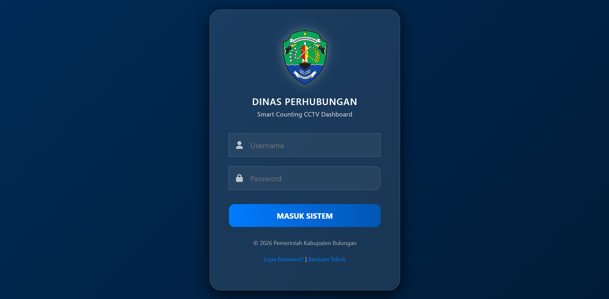

Proyek Pilihan
Geser untuk melihat beberapa karya web dan antarmuka yang pernah saya buat.

SIAP MAJU
Sistem pelaporan kerusakan lampu jalan berbasis web dengan fitur barcode scanning dan tracking status. Sistem membantu mempermudah proses pelaporan serta monitoring tindak lanjut kerusakan.
Lihat Website
Admin SIAP MAJU
Dashboard administratif untuk mengelola laporan kerusakan lampu jalan secara terpusat. Memungkinkan admin memantau, memproses, dan menindaklanjuti laporan yang masuk dari masyarakat.

Smartcounting CCTV Dashboard
Aplikasi monitoring lalu lintas berbasis CCTV yang mengintegrasikan data dari 10+ titik CCTV ke dalam dashboard terpusat. Dilengkapi analisis volume kendaraan, VCR, visualisasi data, dan pelaporan untuk mendukung monitoring operasional.

KerjaKU
Sistem presensi dan manajemen aktivitas kerja berbasis web dengan fitur face recognition. Menyediakan dashboard terpusat untuk membantu monitoring kehadiran dan aktivitas karyawan.

MEDIPULSE
Aplikasi web untuk mengelola jadwal dan pengingat konsumsi obat secara terstruktur. Dilengkapi fitur pencatatan obat, perhitungan kondisi tubuh, dan integrasi machine learning untuk mendukung analisis pengguna.
Lihat GitHub
Landingpage Galeri Wisata
Website galeri wisata yang menyajikan informasi dan visual berbagai destinasi secara terstruktur. Dirancang dengan antarmuka responsif untuk memberikan pengalaman eksplorasi yang nyaman bagi pengguna.
Lihat Website
Website Marketplace Makeup
Website marketplace makeup dengan fitur katalog produk, kategori, keranjang belanja, dan integrasi payment gateway. Dikembangkan untuk mendukung proses pencarian produk hingga transaksi pengguna.
Lihat GitHub
Project-Based Internship Analisis Penjualan
Project analisis penjualan yang mengolah data dari berbagai sumber menjadi informasi dan visualisasi yang terstruktur. Menghasilkan dashboard interaktif untuk menganalisis performa penjualan dan mendukung pengambilan keputusan berbasis data.
Lihat GitHub
NunaCraft
Website katalog produk bucket bunga yang menampilkan koleksi dan informasi produk secara visual dan terstruktur. Dirancang untuk memudahkan pengguna mengeksplorasi berbagai pilihan produk.
Lihat GitHubHaid Tracker
Aplikasi web untuk mencatat dan memantau siklus menstruasi serta riwayat gejala pengguna. Membantu pengguna melihat dan memahami pola siklus secara lebih terstruktur.